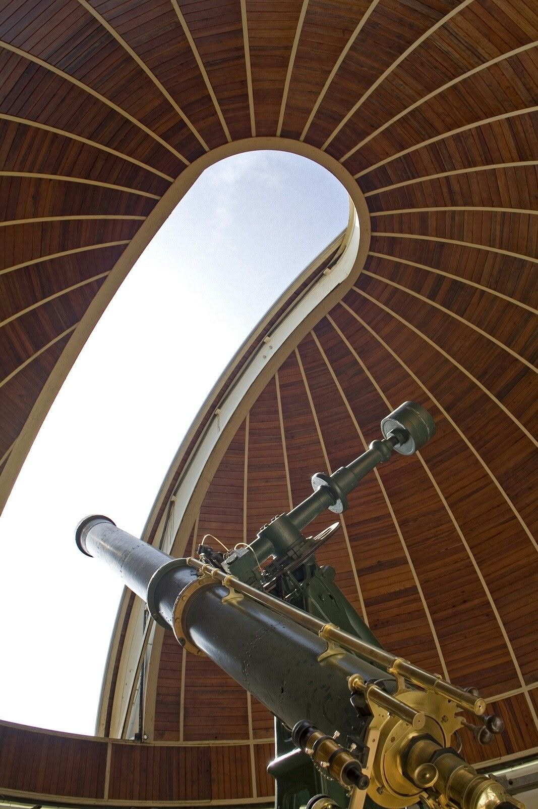

저녁 공개 관측
저녁 공개 관측은 주 망원경과 보조 망원경으로 그날 밤 잘 보이는 천체 두세 개를 보는 50분 프로그램입니다.
- 회차
- 19:30 · 20:30 · 21:30
- 운영일
- 화~일·공휴일
- 소요
- 50분
- 정원
- 30명
- 대상
- 누구나 (18세 이하는 성인과 함께)
- 장소
- 주 관측실 · 옥상 관측 마당
- 요금
- 성인 4,000원
청소년·어린이 (7~18세) 2,000원
7세 미만 무료
진행 순서
- 10분강의실오늘 밤 하늘과 관측 대상 설명
- 30분주 관측실800 mm 반사망원경과 150 mm 굴절망원경으로 천체 관측
- 10분옥상 관측 마당맨눈으로 별자리 찾기
쓰는 장비
- 주 망원경 800 mm 반사
- 보조 망원경 150 mm 굴절 4대
준비물
- 겉옷 (밤 기온 10 °C 안팎)
- 적색 손전등 (없으면 안내 데스크에서 빌린다)

회차 시작 30분 전 구름량이 80% 이상이거나 비가 오면 강의실 천체 투영 강의로 바꾸고 요금의 절반을 돌려준다.